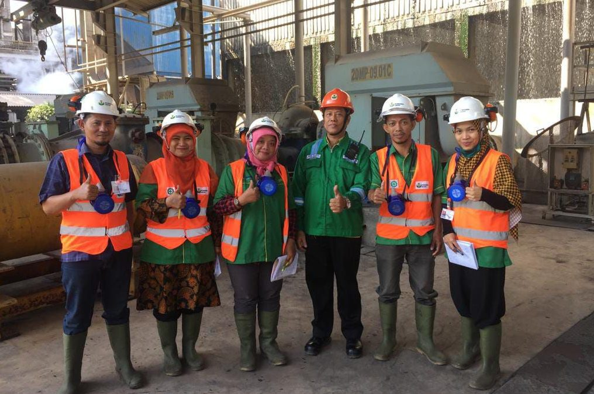

Kimia Industri

Kimia industri adalah cabang ilmu kimia yang menerapkan pengetahuan kimiawi terhadap produksi material dan zat kimia khusus dengan sedikit dampak buruk pada lingkungan.[2]
Meskipun proses kimia laboratorium disesuaikan secara tradisional dengan skala industri, proses tersebut dimodelkan dengan cermat sesuai dengan skala mereka. Dengan demikian, fenomena seperti perpindahan massa atau panas, model arus atau sistem kontrol dikelompokkan dibawah lingkup teknik kimia.
Untuk prediksi pengaruh fluida dan model aliran panas, serta momentum transfer, evaluasi pengaruh hanya dapat didekati secara empiris, skala percobaan (pilot plant) sangat digunakan, untuk mengukur dan memilih bahan dan peralatan.
KIMIA INDUSTRI di SMKN 2 CILEGON dilaksanakan selama 3 Tahun Pelajaran.